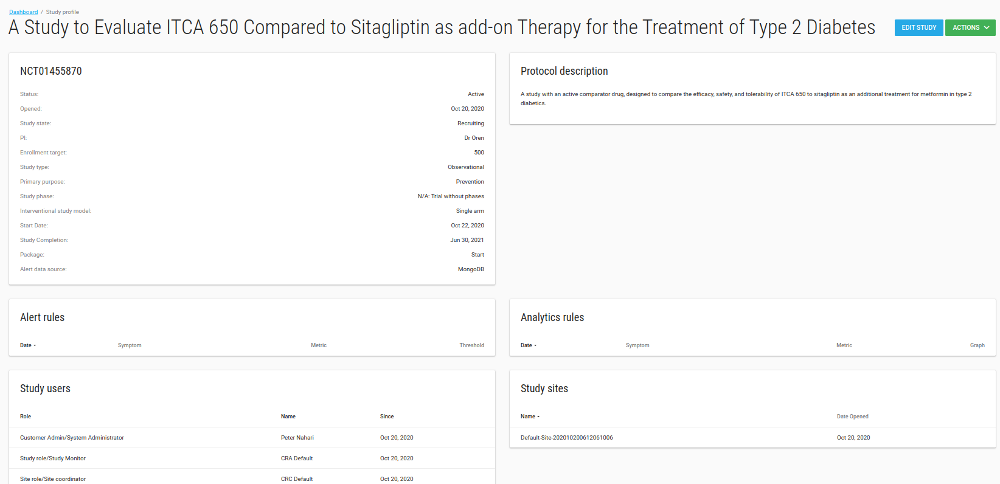

Studies
You can manage all your studies on Flask. You can add/edit your Study properties, assign Users, assign Sites and more.
Add study
To add a new Study go to /studies index page by clicking on Studies in the left side-bar. Click on the green ADD STUDY button.
 Fill in your study properties and click SAVE. The Manage Users page will open.
Fill in your study properties and click SAVE. The Manage Users page will open.
Study values
- Database and EDC URL fields are related to EDC db, if you have EDC (clin capture) db you should fill them.
- Enable patient reported outcome module? Check this checkbox if your study has a PRO for patients.
- PRO URL: If study has another PRO then FlaskData fill the PRO URL field with your study's PRO URL.
- Package: There are 3 available packages, Start, Submit and Validate.
- Start - study uses IRB and Forms
- Submit - Flask+Forms+Tools+EDC. Unlimited sites.
- Validate - Flask+Forms+Tools+EDC. Limited to 3 sites.
- Alert data source: Data for alert definitions (If study uses clinCapture you should choose PostgreSQL otherwise choose MongoDB).
Access Control Lists
ACL utilities:
-
Users can create study roles
-
Users can assign each event definitions to a study role
-
Users can assign each user to a study role
-
Manage research roles are availbale to customer admin and form designer users
Study manage Users
Study Role users get assignmed studies from the customer admin and can only access studies, queries, and subjects. Study Role users can add comments and subscribe to alerts. If given permission, they can also be form designers.
In the manage Users page you can add/remove User from this study.
To add a new User to the study - you need to create the User first.
Type any part of the User's name in the Select Users box and choose the relevant User.

Click NEXT STEP, Welcome emails will be sent to Users' emails.
The Manage Sites page will be opened.
Study manage sites
In manage sites page you can add/remove site from this study.
To add a new site to your study - click on Create Site first.

Type any part of the site name in the Select sites box and pick the site you want to add to your study.
Click NEXT STEP
Study Edit
In the Studies index page you can edit your study.
To edit your study - check it and then click on the green ACTIONS button and choose the Edit option.

In the Edit Study page you can define your study profile, definitions etc.
Note
- Study subject prefix: Prefix for automatically creating a subject label, like study1-001.
- Subject’s IDPs settings: IDP settings for subjects-patients.
When you click SAVE the Study Profile will be opened.
Archived studies
To mark study as Archived you need to change its status to Close.
Danger
Archived studies cannot be modified!!
Studies with Closed status, you can see their data but cannot change data, add subject etc. There are inactive studies.
If you mark study status as closed, the study marked as Archived, and you cannot see it in studies list.
But don't worry go to studies index page and filter studies with Archived only
Now you can see the study but cannot change it.

Study Profile
In the Study Profile page you can see your study's definitions, alert rules, analytic rules, Users, sites and comments.

There is a Comments card that you can write all free text comments about your study.

There is an ACTIONS green button with Manage Users and Manage Sites options.
Study Metadata
In study profile there is a Study Metadata card.
In this table customer admin user can add/edit/delete free text meta-data strings describing your study.
For example, you can use Study MetaData to store the URL of a mobile app.

Extract study_metadata by API
You can get this table data from the generic API.
Body request should be something like:
{
"tableName": "study_metadata",
"fromDate": "2018-03-29T11:44:12.511Z",
"toDate": "2020-12-29T11:44:12.511Z"
}